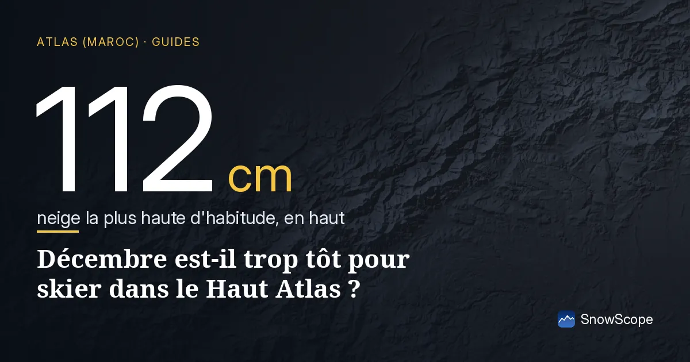

Décembre est-il trop tôt pour skier dans le Haut Atlas ?
Décembre est tôt dans le Haut Atlas. À mi-montagne autour de 2 929 m, Oukaimeden retient une profondeur typique de 18 cm en décembre, contre 53 cm en mars quand la neige atteint son pic. Mais maigre ne veut pas dire fermé : le bon moment et la bonne altitude peuvent livrer de la neige skiable.
Consultez les prévisions neige en temps réel pour Oukaimden ski resort sur l'application SnowScopeHauteurs de neige, alertes poudreuse et carte 3D, gratuitement.
Comment la neige s'accumule au cours de la saison
L'Atlas reçoit la neige par à-coups. Plutôt que des chutes régulières chaque semaine, une tempête peut déposer la moitié de la charge saisonnière, puis des semaines de soleil et de vent la réduisent. Ce rythme signifie que décembre arrive souvent avant que le manteau neigeux principal ne se soit formé.
La profondeur augmente avec l'altitude et le mois. À la base, 2 600 m, la neige typique de décembre est 16 cm. À mi-montagne, 2 929 m, elle atteint 18 cm. Au sommet, 3 258 m, elle monte à 20 cm. Avancez jusqu'en mars et les mêmes altitudes retiennent 46 cm, 53 cm et 58 cm. Les pentes supérieures enneigent toujours en premier et la conservent le plus longtemps.

Quand décembre peut marcher
Fin décembre offre de meilleures chances qu'en début de mois. Au 1er décembre, seulement 2 % des hivers passés avaient 50 cm ou plus à la base, et 26 % avaient au moins 25 cm. Au 25 décembre, ces proportions passent à 7 % et 37 %. Au 31 décembre, elles atteindent 9 % et 37 %. Le schéma se confirme à mi-montagne aussi : 4 % des hivers atteignent 50 cm au 15 décembre, montant à 13 % au 25 décembre.
Les pentes supérieures restent en avance. À 3 258 m le 15 décembre, 15 % des hivers passés retenaient 50 cm ou plus, montant à 20 % au 25 décembre. Si vous avez le choix de l'altitude, allez plus haut en décembre.

Le risque de faible enneigement
Les rochers et le sol à nu sont des risques réels en début décembre. Le Noël de l'hiver dernier a montré les deux extrêmes : mi-montagne retenait 78 cm le 25 décembre 2025, mais la base était dégarnies. Le schéma de cette année suivra la même règle : la profondeur augmente fortement avec l'altitude.
Les pistes damées et le terrain supérieur sont des paris plus sûrs que les pentes inférieures ou le hors-piste en décembre. Consultez la carte SnowScope pour la profondeur réelle avant de réserver.
Février et mars : le pari sûr
Si vos dates sont flexibles, décalez-les en avant. La meilleure semaine de toute la saison à mi-montagne est la semaine 9, fin février : 59 % des hivers passés retenaient 50 cm ou plus, avec une profondeur typique de 59 cm. Mars atteint son pic à 53 cm de profondeur typique, atteint dans environ la moitié de tous les hivers.
La saison s'étire longtemps : un hiver typique voit 138 jours avec de la neige au sol. Mais les premières semaines sont les plus maigres. L'hiver dernier a culminé à 132 cm à mi-montagne et 181 cm au sommet, mais ce pic est arrivé après janvier.
Ce que l'hiver dernier nous enseigne
La saison 2025-26 a montré la variabilité de l'Atlas. Au 15 décembre, mi-montagne retenait 33 cm, légèrement au-dessus des 16 cm typiques pour cette date. À Noël, elle avait grandi à 78 cm, bien en avance sur la norme de 20 cm. Pourtant d'autres décembres sont dégarnies : dans 1 hiver sur 5 au 15 décembre, mi-montagne est presque sans neige, avec moins de 5 cm.
La leçon : consultez la prévision réelle avant de faire vos bagages. Les voyages en début de saison vers le Haut Atlas demandent soit de la flexibilité, soit de la chance.
Conseils aux skieurs
- Si décembre est votre seule option, réservez fin décembre après vérification de la carte SnowScope pour les chutes récentes.
- Choisissez toujours mi-montagne ou le sommet de la station plutôt que la base en début de saison ; la profondeur gagne 2–5 cm par 300 m d'altitude.
- Visez la semaine 9 de février (fin février) ou n'importe quelle semaine de mars pour la neige la plus fiable.
- Les pistes en début de saison sont maigres : restez sur le terrain damé, surveillez les rochers, et évitez le hors-piste jusqu'à ce que SnowScope affiche 50 cm ou plus.
- Consultez la prévision à deux semaines et la carte quotidienne de neige avant de réserver les vols ou le transport ; l'Atlas peut passer de dégarnies à bonnes après une seule tempête.
À propos de ces chiffres
Les hauteurs de neige des stations sont la neige la plus épaisse sur le haut du domaine à la date indiquée ; ce sont des estimations pour une zone, pas une mesure en un point. Les prévisions peuvent changer. Consultez toujours le bulletin d'avalanche officiel avant le hors-piste.
Citer ce bulletin
Pour la recherche, l'enseignement ou la presse : chiffres et graphiques réutilisables librement sous CC BY 4.0 avec cette citation.
SnowScope (2026), Décembre est-il trop tôt pour skier dans le Haut Atlas ?, https://snowscope.app/blog/fr/2026/11/decembre-trop-tot-pour-skier-haut-atlas.html, consulté le 2026-11-14
SnowScope (Atlas Labs). (2026, November 14). Décembre est-il trop tôt pour skier dans le Haut Atlas ?. SnowScope snow reports. https://snowscope.app/blog/fr/2026/11/decembre-trop-tot-pour-skier-haut-atlas.html
BibTeX
@misc{snowscope2026decembretroptotpourskier,
author = {{SnowScope (Atlas Labs)}},
title = {Décembre est-il trop tôt pour skier dans le Haut Atlas ?},
year = {2026},
month = nov,
howpublished = {\url{https://snowscope.app/blog/fr/2026/11/decembre-trop-tot-pour-skier-haut-atlas.html}},
note = {Published 2026-11-14 13:29 UTC; accessed 2026-11-14}
}· CC BY 4.0 · Méthodes, données et outils →
Suivre Oukaimden ski resort
Gratuit : un message quand la neige arrive, et la météo chaque matin.
Autres bulletins neige

Oukaïmeden se trouve à 50 km de Marrakech. La neige de décembre est fine et imprévisible : organisez-vous autour des tempêtes, pas du calendrier. Données du 13 novembre 2026.

À la station de ski d'Oukaïmeden au Maroc, un 15 décembre typique n'apporte que 16 cm à mi-montagne. SnowScope montre les probabilités à partir de 46 hivers de données.

Un carnet pratique sur Oukaïmeden, dans le Haut Atlas : quand la neige arrive, en quelle quantité, quelles pentes viser et comment y aller depuis Marrakech.